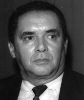

Filho do ex-prefeito Antônio José de Oliveira de Porto Nacional e bisneto do Cel. Joaquim Aires da Silva, Olegário deu continuidade ao legado político da família. Como prefeito de Porto Nacional, realizou obras marcantes como a Praça do Centenário, calçamento e arborização de ruas. Investiu em postos de saúde, escolas, pontes e estradas nos distritos, além de incentivar exposições agropecuárias e a organização de trabalhadores rurais.
